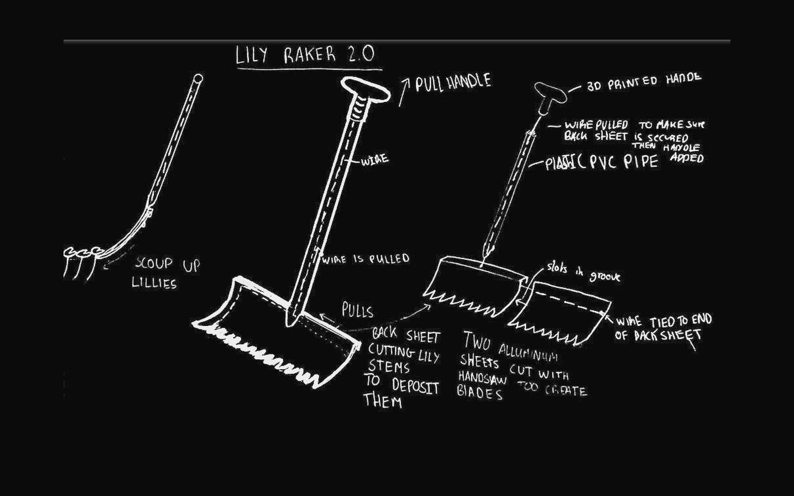
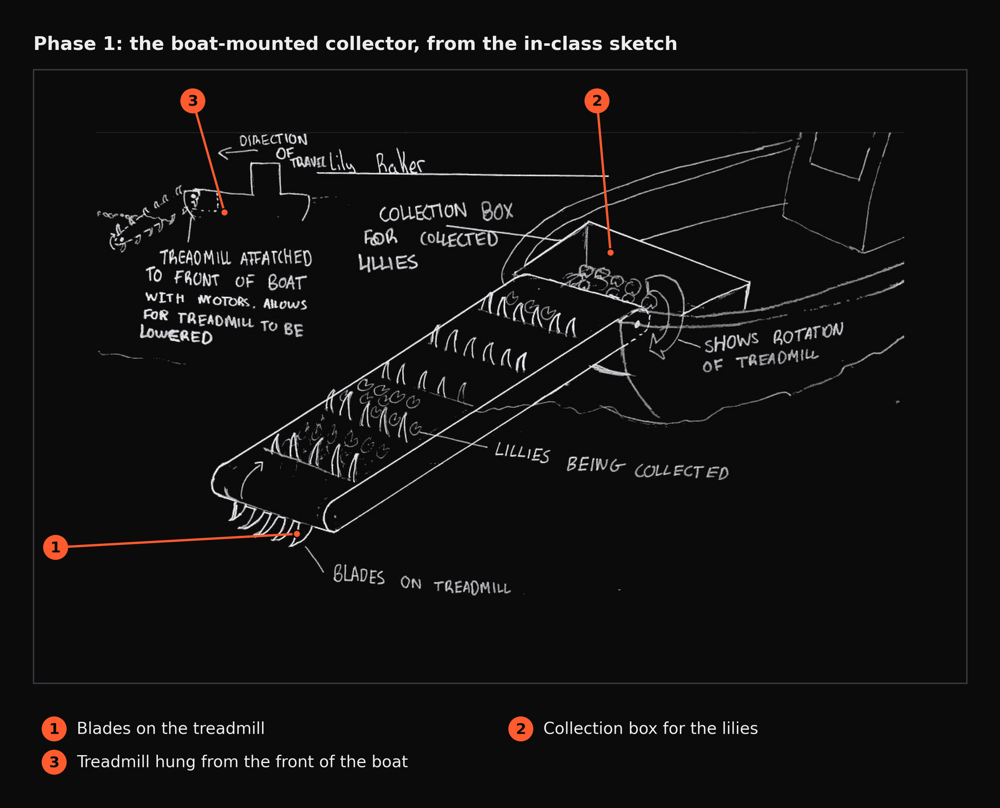
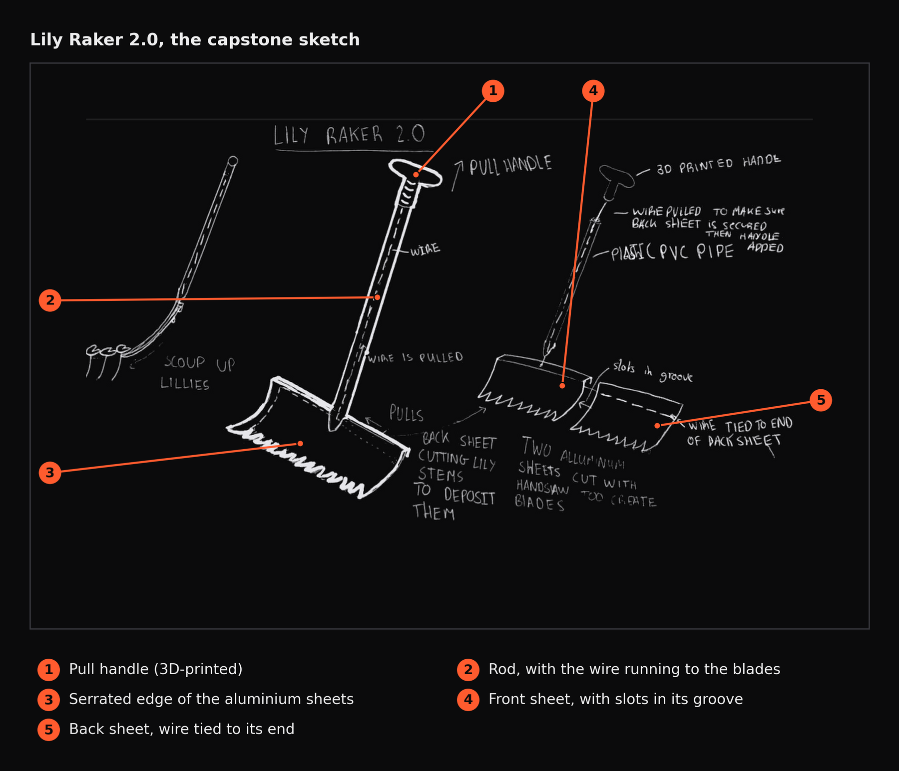
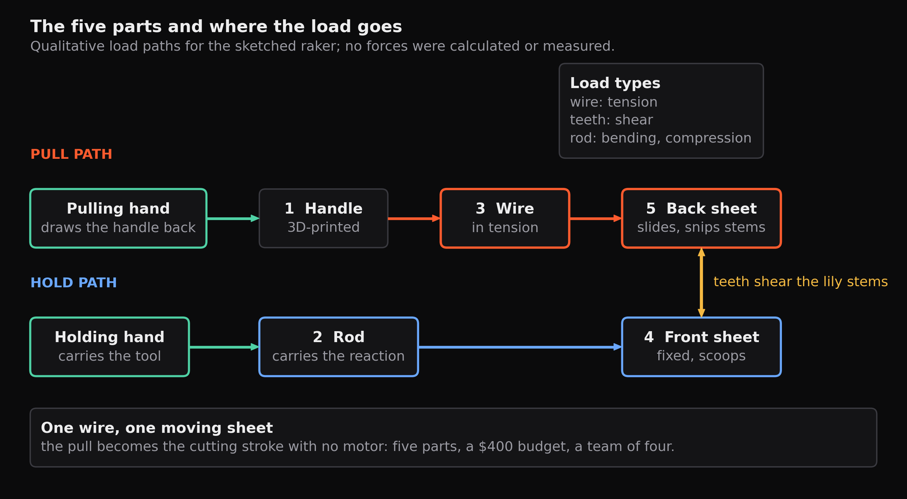

Hardware · Fall 2022 · Concept
Water lily raker
A handheld tool for clearing an invasive water lily, redesigned when the real constraints arrived.

- $400budget
- 4people on the team
- 2semesters allowed for a working product
- 5parts in the final design
A design problem set around invasive water lily overgrowth near Badajoz. The first phase sketched a boat-mounted collector; the second, under team, time and budget limits, produced a handheld raker that works from a boat or from the bank.
01The problem
A water lily had overgrown a river near Badajoz. The pads rot, the rotting uses up the oxygen in the water, and everything living in it suffers. The first task was to name the problem, propose a solution and document it in a sketch, following the course's rules on drawing style and the essential features to show.
02Phase 1: a collector on a boat
The first idea was a device on a boat that collects lilies and deposits them into it, controlling the growth without harming wildlife. The sketch shows how it attaches to the boat and uses darker lines at edges that separate material from air.


03Phase 2: real limits
Then the constraints arrived: a team of four, a working product within two semesters, a $400 budget, and a requirement to keep the complexity down. The product also had to work on land, to reach lilies along the banks. The first solution was no longer feasible, so the problem was rethought from the start.
The result is a handheld raker, used by a person on a boat or on land. A scoop gathers lilies toward a collection box. Pulling the handle drives a wire that moves the back aluminium sheet, which snips every stem, and the pads fall into deposit boxes. It is made from five pieces: a 3D-printed handle, a thin hollow rod (PVC pipe in the sketch), two thin and malleable aluminium sheets that can be cut and bent easily at this size, and the wire.




04What it taught
Constraints are the design. A solution that works without limits can be useless inside them, and the second sketch is simpler, cheaper and more likely to be built than the first. It stayed at the sketch stage, and I make no claims about how well it would work.